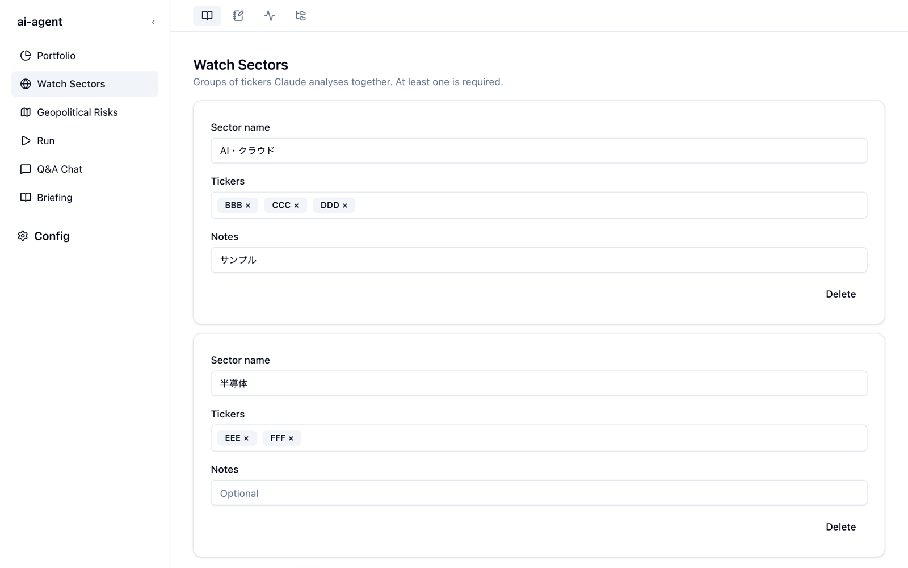
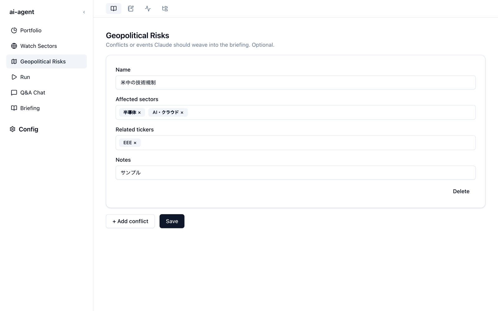

視点を設定する
brief-lens のブリーフィングは、ここで登録した銘柄・テーマ・セクター・地政学リスクを軸に書かれます。同じニュースでも、自分のポジションにどう効くかという視点で解釈させるための設定です。どの画面も Briefing サービスのサイドバーにあります。
Portfolio — 銘柄とテーマ
ブリーフィングで取り上げてほしい銘柄コード（Tickers）と、Claude に意識させたいテーマ（Themes）を登録します。

- 入力欄に文字を打ち、Enter かカンマ（,）で確定するとチップになります。
- チップの × で削除できます。入力欄が空のときに Backspace を押すと、最後のチップが消えます。
- 最後に Save を押すと
briefing.jsonに保存されます。押すまでは保存されません。
銘柄コードは yfinance で株価を取得できる形式で書きます（米国株はティッカーをそのまま、東証は XXXX.T のように 4 桁のコードの末尾に .T を付けます）。
Watch Sectors — まとめて見るセクター
Claude にまとめて分析させたい銘柄のグループを、セクター単位で登録します。保有していない銘柄も入れられるので、業界全体の動きを追うのに使います。少なくとも 1 つは必要です。

| 項目 | 内容 |
|---|---|
| Sector name | セクターの名前（例: AI・クラウド） |
| Tickers | そのセクターで見る銘柄コード |
| Notes | 任意のメモ。何に注目しているかを書いておくと、分析の観点として使われます |
+ Add sector で行を追加し、各行の Delete で削除します。最後に Save を押します。
Geopolitical Risks — 地政学リスク
ブリーフィングに織り込んでほしい紛争や地政学イベントを登録します。登録は任意です。brief-lens は、登録したリスクと株価の因果関係を毎日の出力に入れるように作られています。

| 項目 | 内容 |
|---|---|
| Name | リスクの名前（例: 米中の技術規制） |
| Affected sectors | 影響を受けるセクター |
| Related tickers | 関連する銘柄コード |
| Notes | 任意のメモ。注目している論点を書きます |
+ Add conflict で追加し、Save で保存します。
設定が反映されるタイミング
保存した内容は、次にブリーフィングを生成したときから使われます。生成のたびに設定ファイルを読み直すので、アプリの再起動は要りません。
画面にない項目は設定ファイルで。
為替のバンドや使用するモデルなど、画面から編集できない項目もあります。Config → Config file で
briefing.json を書き出して編集し、読み込み直すこともできます。項目の一覧は設定ファイルを参照してください。
設定ファイルがないときは
「briefing.json is missing」と表示された場合は、Config → Setup でセットアップウィザードをやり直してください。